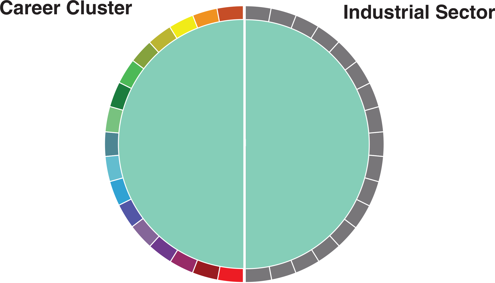

There are several notable relationships between major and eventual industry of employment. College parallel, e.g., transfer, majors who did not transfer comprised the majority of the TEOS dataset, nearly 10,000 students. Subsequently, college parallel majors were the largest source of employment in almost every industry. Health majors almost universally transitioned into jobs within the health industry. Although these occupations may not be aligned with their major, this indicates success within the program. Besides health majors, college parallel students were the second largest source of labor coming from Iowa community colleges into the health industry. Business students, the third largest major, mostly transitioned into the manufacturing industry, followed by retail trades and health care. The data also revealed particular, but expected, aspects of each program. For instance, information technology (IT) is utilized in every sector of the economy. Subsequently, IT majors were proportionally represented in each sector. The data also revealed successful transitions from majors to industries. Manufacturing majors end up in the manufacturing industry by a large margin. Finally, we can also infer information about labor demand from industries. The manufacturing sector is the largest employer of Iowa community college leavers and graduates. Those employers hired a substantial number of college parallel program participants. The health care and administration sector is also a large employer, mostly hiring health science and college parallel majors.
Several studies use administrative educational and unemployment insurance (UI) records to report average wages [2,7]. The State of Iowa also uses UI records to track students from majors in community colleges to industry of employment. The Iowa Department of Education (IDE) and Iowa Workforce Development (IWD) collaborated to form the Training and Employment Outcomes System (TEOS) by joining education and UI records.
First, IDE included a cohort of students, who either left after the 2004-05 academic year or completed a degree in the 2005-06 academic year. IDE matched the records with the National Student Clearinghouse to remove any student found at another postsecondary institution. Those students were then matched with IWD’s UI records. Wages and employment were aggregated by year and then returned to IDE to be merged with the education data. The resulting dataset, TEOS, is then used by both departments. 
We used Circos, a program designed to show related genomes across various species [3,5], to illustrate the movement from career clusters to industries. The left portion of the center diagram shows the sixteen career clusters and the transferoriented college parallel programs [8]. The right shows the industry of primary employment three years after graduation. Industries are aggregated to the twodigit industry code set by the North American Industry Classification System (NAICS). We presumed the highest paying wage is the principal employment for each student.
Industries are aggregated to the two-digit NAICS code [9]. There are a couple of notable exceptions.First, manufacturing included codes 31, 32, and 33. Second, retail trade included codes 44 and 45-retail stores and mail-order & used merchandise. Transportation and Warehousing included codes 48 and 49, which consists of transportation, postal services, and warehousing & storage. These industrial groupings are commonly suggested by the Census Bureau.
The findings indicate areas of furthur inquiry and areas for policy. First, many students from community colleges in the workforce were in college parallel programs. Other research suggests these students learn lower wages than students in other career clusters [7]. Furthur research and policy should examine their career aspirations and divert them to a related career cluster. Although we emphasized visual exploration of the data, furthur research should use quantitative methods to isolate the variation of other contributing factors, such as demographics [1,4,6].
Manufacturing employes a large number of community college students from a diverse range of career clusters. Manufacturing is also the largest industry in Iowa. Twenty-one percent of Iowa’s GDP is anufacturing output. The sector itself is comprised of three types of manufacturing: food & textile; wood and nonmetal; and metal & electronic manufacturing. The diagram above breaks-down transitions into each manufactuing subsector. Metal & electronic manufacturing was the largest subsector of employment with manufacturing, employing 1,716 students. Combined, food & textile and wood & nonmetal manufacturing employed 1,512 students. Manufacturing students were typically located in metal & electronic manufacturing subsector. Almost 70 percent of former manufacturing students within the manufacturing sector were employed there.